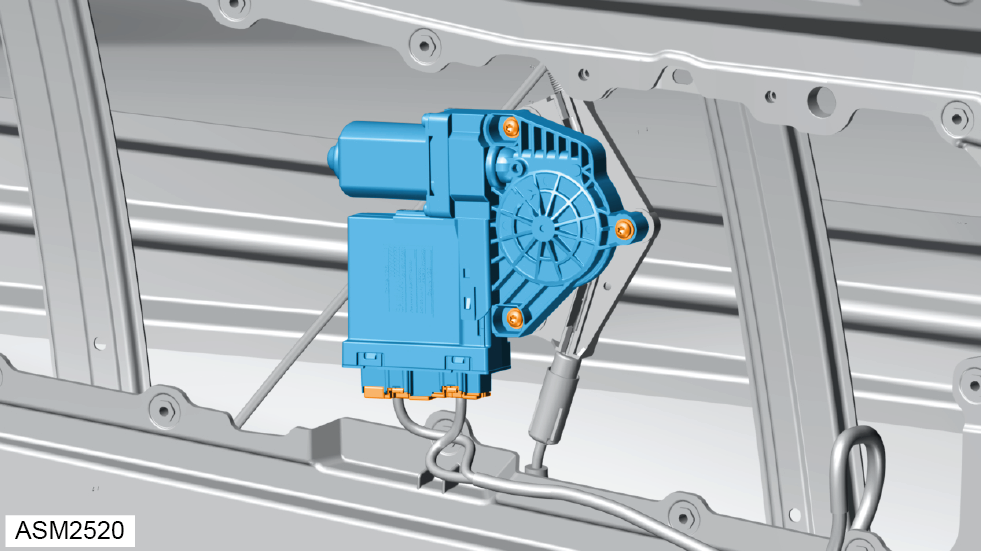
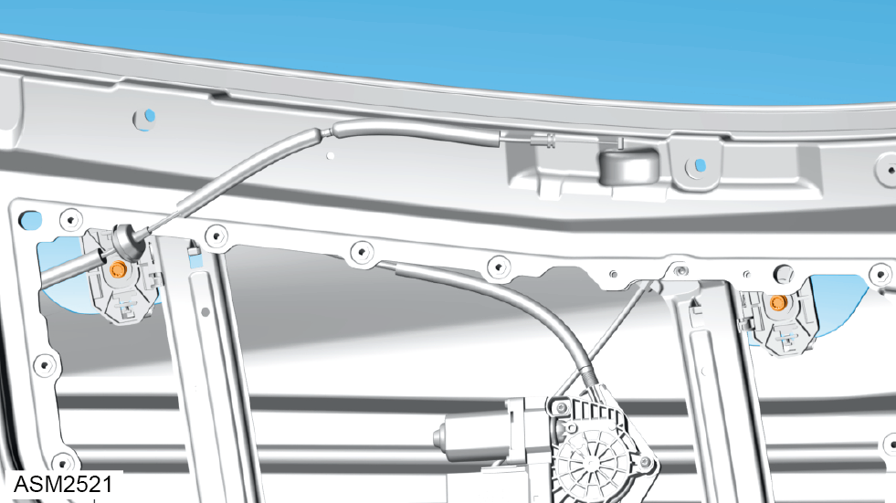
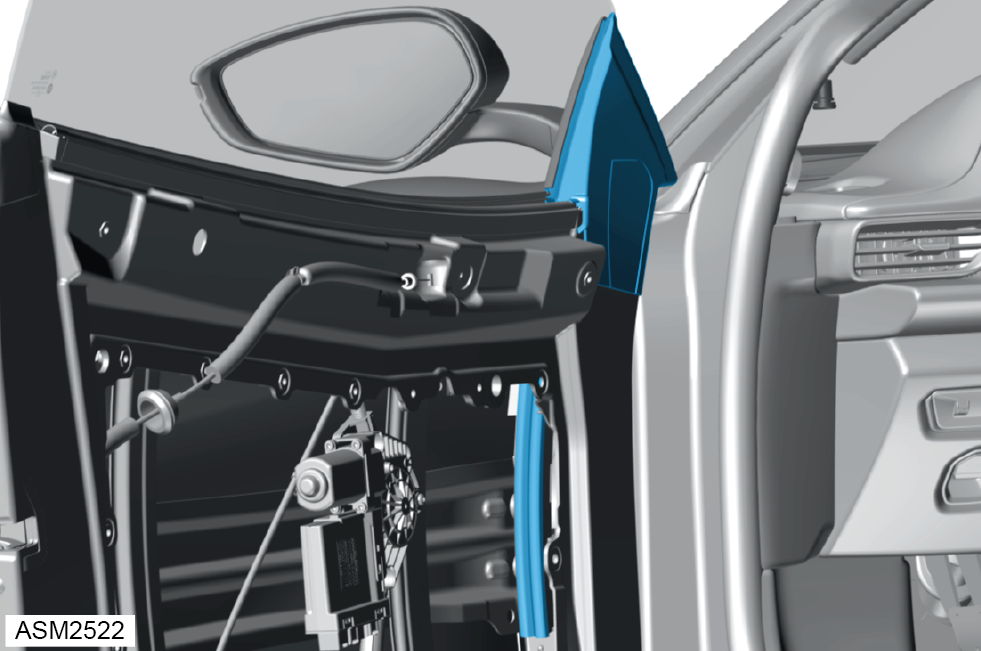
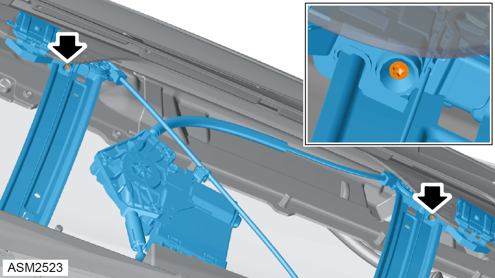
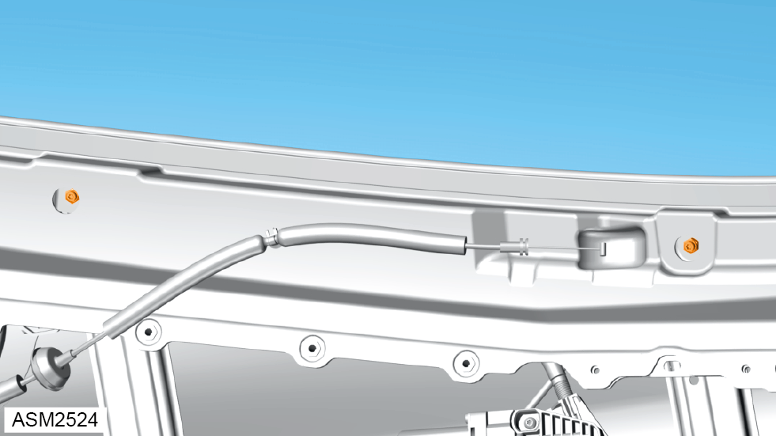
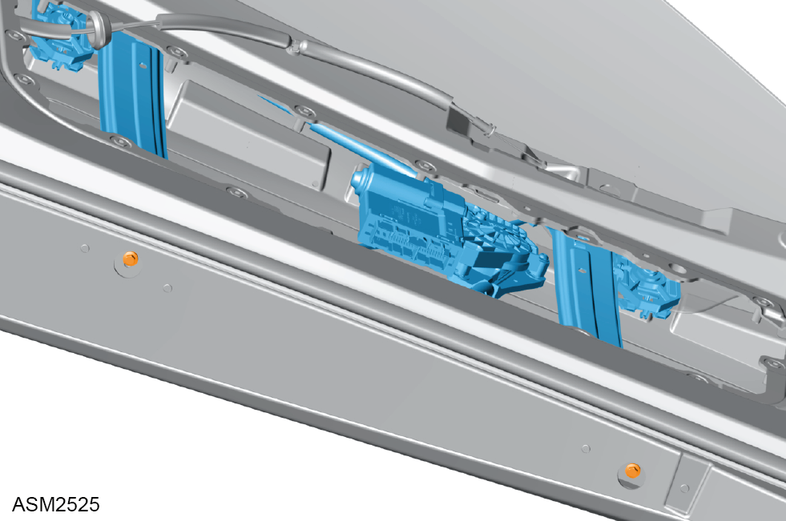

Door Glass - Alignment
Print
Operation Code: 11.01.00-00
Raising/Lowering Glass During Alignment

- Install window motor to window lift mechanism.
- Install 5x22 screws (x3) securing window motor to window lift mechanism.
- Connect harness connectors (x2) to window motor.
- Support window motor using one hand whilst operating window switch to raise/lower door glass.
NOTE: Door interior panel must be plugged into door harness to enable window switches to operate window regulator motor.
- To set auto drop, fully raise window and hold switch for 2 seconds until a click is heard. Repeat process for fully lowered position.
NOTE: Perform with door open.
- Close door, raise and lower window to ensure door glass drop is working correctly.
Level Adjustment

- Install screws (x2) in middle of holes in door glass.
NOTE: Tolerance between clamp screws and holes in door glass allows for a small amount of rotational adjustment to level door glass.

- Push door glass forwards into guide rail channel, keeping screws in middle of holes in door glass.
NOTE: Make sure door glass is located into front door glass channel during installation.
- Tighten screws (x2) securing door glass to window lift mechanism.
Height Adjustment

- Turn screws (x2) on rear of retaining clamps on window lift mechanism to adjust door glass height when in fully closed position.
NOTE: On upwards glass movement, when stepped stops of retaining clamps touch corresponding tabs on window lift mechanism runners, a signal is sent to window motor controller module to stop window motor. This adjustment is normally not necessary.
Tilt Adjustment

- Using a screwdriver, turn studs (x2) on window lift mechanism runners while using a spanner to tighten the nuts (x2) at the same time to adjust lower edge of door glass inwards/outwards. Torque 3.5 Nm.
NOTE: Studs on a new window lift mechanism are set in the nominal position. It is recommend to install window lift mechanism in position, hold studs in position with a screwdriver and use a spanner to tighten nuts at same time, then see if adjustment is required. Make sure both studs are adjusted equally.

- Adjust window lift mechanism to align rear upper edge of door glass.
NOTE: Lower mounting brackets of window lift mechanism have a elongated holes to allow inward/outward movement of rear upper edge of door glass for seal engagement.
- Tighten M6x16 bolts (x2) securing window lift mechanism to door. Torque 7 Nm.
NOTE: Holes in base of door provide access to tighten bolts when lower mounting brackets of window lift mechanism are in desired position.